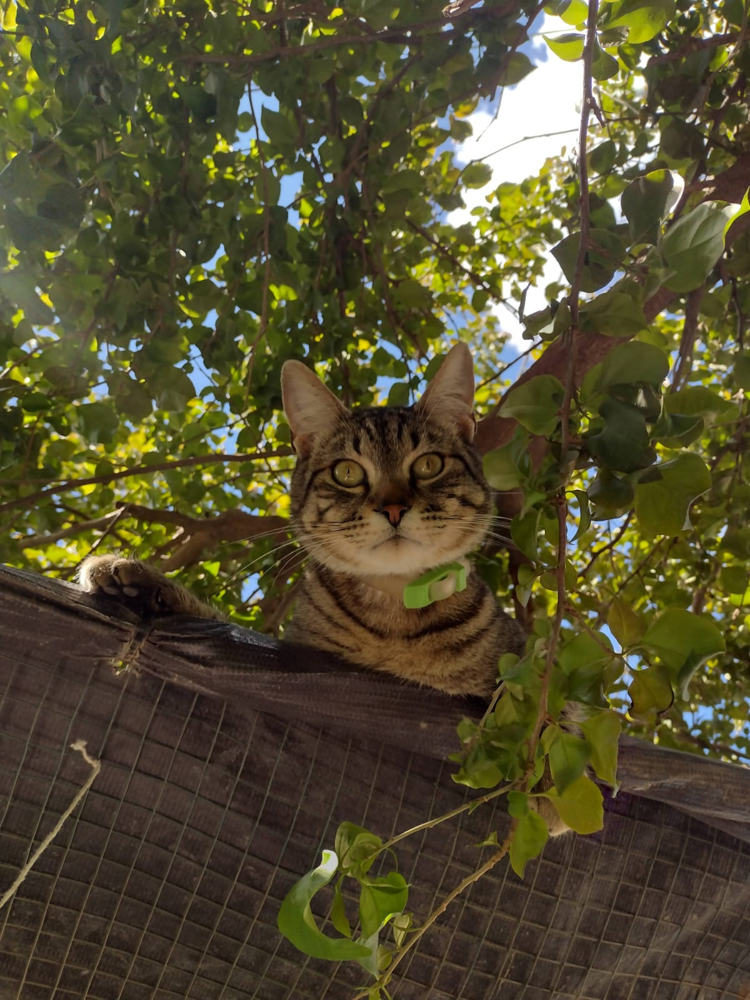
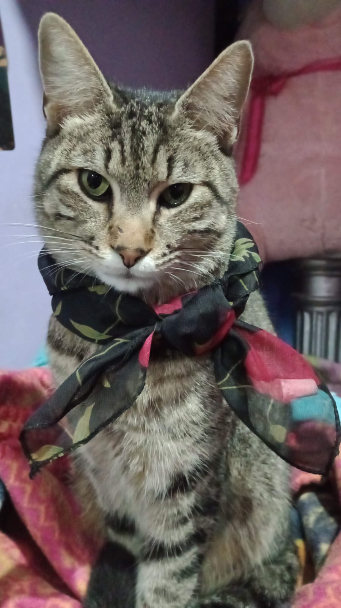
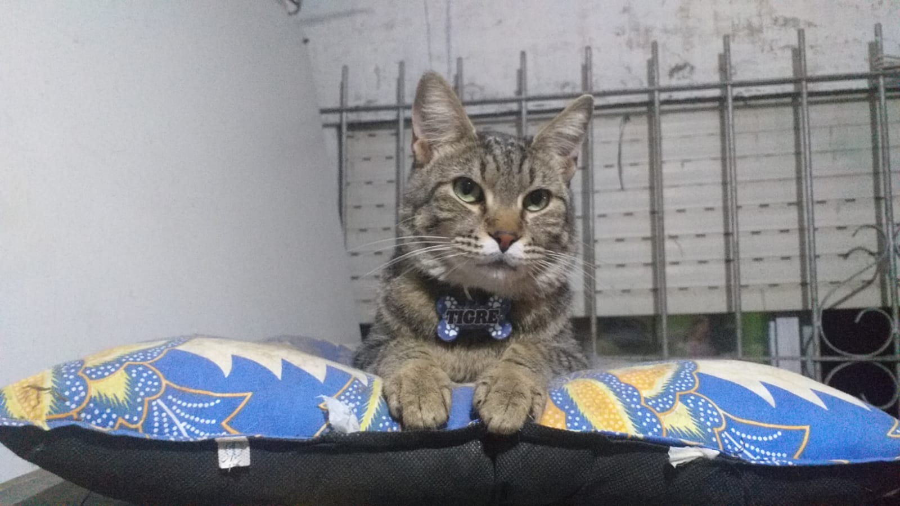
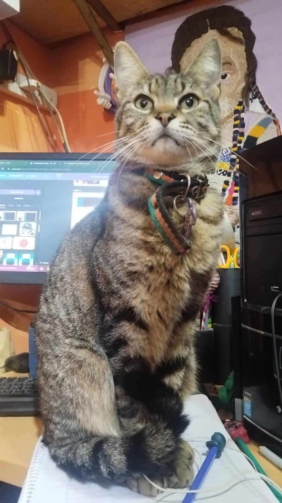
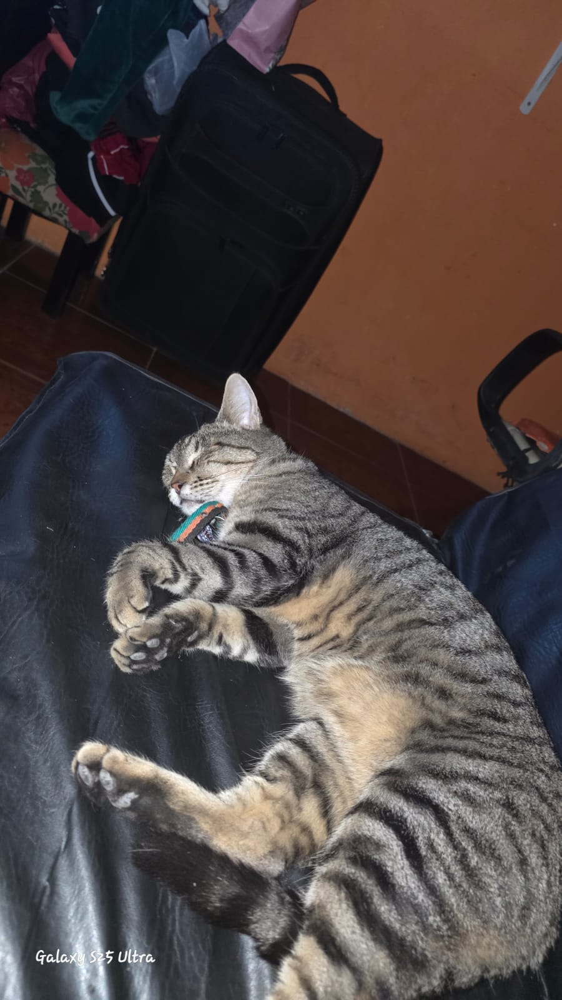
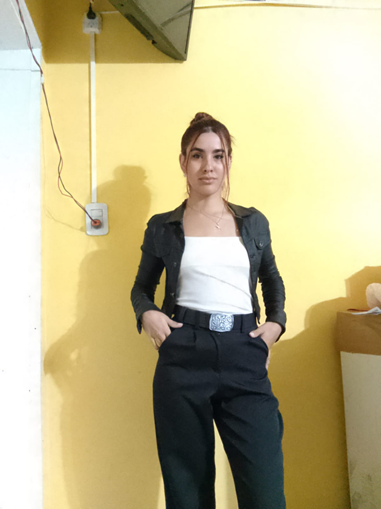
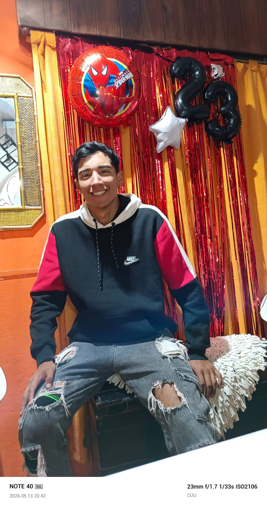
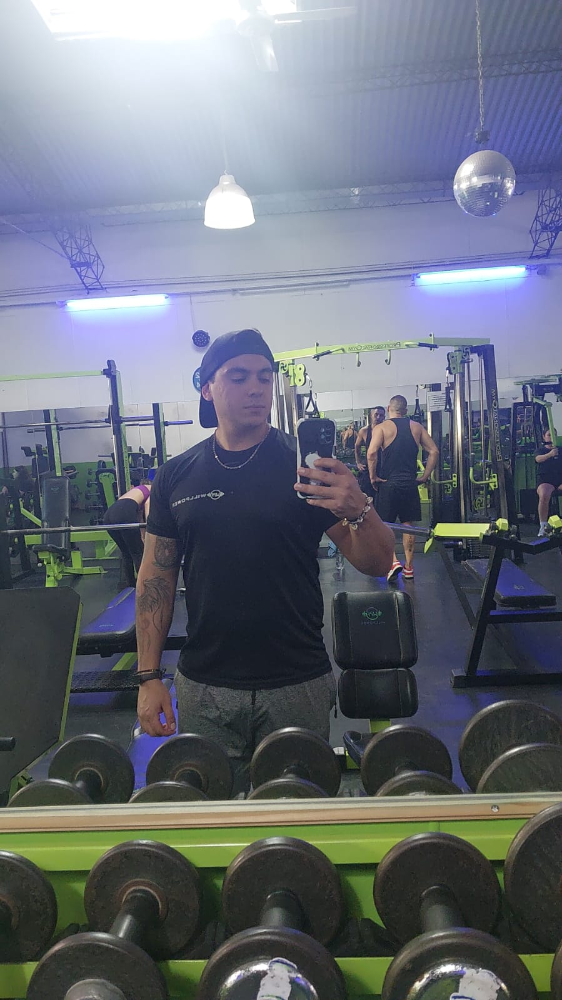

El Supervisor 01
Ubicado estratégicamente en alturas considerables para juzgar en silencio tus técnicas de orden.
Gato atigrado, estratega del descanso y dueño absoluto de cada rincón de la casa. Tigre no se adapta a las reglas del hogar; el hogar se adaptó a sus caprichos.
Exigir Audiencia Real

Seis años gobernando los almohadones mediante decretos de maullidos a las 3:00 AM.
Camuflaje de alta gama texturado, diseñado para mimetizarse con mantas costosas.
Exigencia exclusiva de apertura manual de canillas. El agua en plato es para plebeyos.
Inmediata indignación ante puertas cerradas o retrasos de más de dos minutos en la cena.
Las tres facetas que rigen la dinámica diaria del hogar.

Ubicado estratégicamente en alturas considerables para juzgar en silencio tus técnicas de orden.

Maullido agudo sostenido enfrente de la computadora, exigiendo atención y mimos.

Durmiendo panza arriba en el medio del sillón. Una trampa visual: tocar la panza activa las garras.
El equipo humano que mantiene el reino en funcionamiento, bajo supervisión directa.
Debe prestar atención cuando está con la computadora. Si desobedece, Tigre se sienta en el teclado como castigo.

Encargada de abrir la ventana para los recorridos nocturnos. Si desobedece, es castigada arrojándole sus peluches.

Debe estar listo para las siestas reales en su regazo. Disposición inmediata ante ronroneo de aproximación.

Encargado de alimentar a Tigre a escondidas de la jefa mayor. Operaciones encubiertas de snacks.
Desde sus días de heredero amamantado hasta su reinado actual.
Las solicitudes para ocupar el lado izquierdo del sillón o brindar mimos están sujetas a evaluación de ánimo. Mensajes con snacks húmedos se procesan primero.